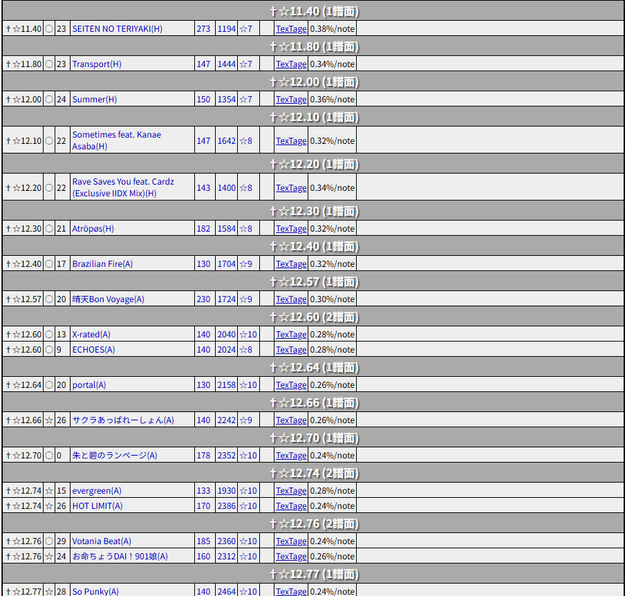

【アーケード作品用の表】
【前提】にある「おすすめ度」によって表示を分けた3種類が存在します。
- DBR難易度表(イージー)：メインの難易度表です。☆、○の譜面が表示されます。
- DBR難易度表(イージー)(おすすめ)：☆の譜面が表示されます。
- DBR難易度表(イージー)(全譜面)：全ての譜面が表示されます。

- レベル：譜面のレベルです。詳細は【前提】をご参照ください。
- 薦：譜面のおすすめ度です。(おすすめ)表の場合、☆のみを表示しているため省略されます。詳細は【前提】をご参照ください。
- ver：楽曲のAC初収録バージョンです。substreamは「s」で、CSおよびINF限定の曲は「0」としています。
- タイトル：曲名+(難易度)です。
- BPM：譜面のBPMです。ソフランがある場合、表記は「最小値-最大値」となります。
- ノーツ数：譜面の全ノーツ数からスクラッチの数を引いた、実質ノーツ数です。スクラッチ数のデータが未登録の場合、全ノーツ数を括弧付きで表示します。
- SPLv：譜面のSPにおけるレベルです。
- 動画：譜面確認用のプレイ動画です。掲載にご協力いただける方は、管理用スプレッドシートの「修正依頼」シートに記載いただくか、@DBR_Difficulty宛にDMをお送りください。
- TexTage：譜面確認用のTexTageリンクです。表読み込み時に乱数生成しているため、画面のリロードまで同じ譜面は同じ配置のURLになります。
- ゲージ増加量：NORMAL以下のゲージでGREAT以上を出した際の、1ノーツあたりのゲージ増加量です。（参考）
- コメント：譜面のおすすめコメント、譜面傾向、解説、攻略情報などが記載されます。

AC現行作品で遊べない曲は「†☆」として扱い、最下部に表示されます。
移植、復活時などは管理者側が「†☆」用のフラグを消すだけなので、即日～数日中に反映されます。